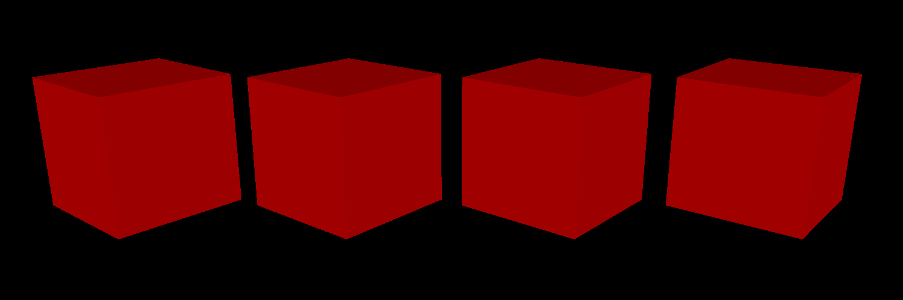

**Assignment 1 Report**
AndrewID: yunqili
(##) About this template
* You can view your writeup by opening it in a browser - right click this file and open with your browser of choice.
* Replace reference images with your own screenshots or renders when applicable.
* Include descriptions of any encountered problems and the time you spent on each task.
* **NOTE: The images you will submit here are different from the images in `A1.md`. Please make sure you are submitting the correct images.**
(##) A1T1 CHECKPOINT
You do not need any screenshots for this task.
Your completion will be graded based on the reference `test.a1.task1.cpp` file and
checking that transformations can be correctly applied in the GUI.
(##) A1T2 CHECKPOINT
<<<<<<< HEAD
=======
Please replace the above image with your own screenshot of the rasterized wireframe cubes, but all in **RED**.
This can be done by doing the following:
* Open `media/js3d/A1-cubes.js3d` in the GUI,
* Set the DrawStyle of every cube to be 'Wireframe',
* Setting the material of one of the cubes to be a Constant type with a red color,
* Click on the Render tab, then open the Render Window, and use the default settings to rasterize the scene. You will need to switch from the `Path Tracer` option to `Software Rasterizer` option.
Your completion will be graded based on the on the above picture, the reference `test.a1.task2.cpp` file and
checking that rasterizing wireframe meshes will look decent.
>>>>>>> 674ee4d49721d835956a9f8a2510acec515e311a
(##) A1T3 CHECKPOINT

<<<<<<< HEAD
=======
Please replace the above image with your own screenshot of the rasterized flat triangles cubes, but all in **RED**.
This can be done by doing the following:
* Open `media/js3d/A1-cubes.js3d` in the GUI,
* Set the DrawStyle of every cube to be 'Flat',
* Setting the material of one of the cubes to be a Constant type with a red color,
* Click on the Render tab, then open the Render Window, and use the default settings to rasterize the scene. You will need to switch from the `Path Tracer` option to `Software Rasterizer` option.
>>>>>>> 674ee4d49721d835956a9f8a2510acec515e311a
(##) A1T4 CHECKPOINT
You do not need any screenshots for this task. However, please answer the following questions about `media/js3d/A1T4-blend-depth.js3d1`:
* What combination of blend and depth styles would enable us to see three colors?
* Red: Blend: Replace, Depth: Less
* Green: Blend: Replace, Depth: Less
* Blue: Blend: Replace, Depth: Less
* What combination of blend and depth styles would enable us to see five colors?
* Red: Blend: Add, Depth: Less
* Green: Blend: Add, Depth: Less
* Blue: Blend: Add, Depth: Less
Do note that there are multiple correct answers to the above two questions - as long as you provide a valid one, you will receive credit.
Your completion will be graded based on the on the above answers, the reference `test.a1.task4.cpp` file and
checking that rasterizing with different blend and depth modes will look decent.
(##) A1T5 FINAL
<<<<<<< HEAD
=======
Please replace the above image with your own screenshot of the rasterized smooth and correct triangles cubes.
This can be done by doing the following:
* Open `media/js3d/A1-cubes.js3d` in the GUI,
* Set the DrawStyle of the wireframe cube to be 'smooth' and the DrawStyle of the flat cube to be 'correct',
* Click on the Render tab, then open the Render Window, and use the default settings to rasterize the scene. You will need to switch from the `Path Tracer` option to `Software Rasterizer` option.
Your completion will be graded based on the above picture, the reference `test.a1.task5.cpp` file and
checking that rasterizing flat triangle meshes will look decent.
>>>>>>> 674ee4d49721d835956a9f8a2510acec515e311a
(##) A1T6 FINAL
You do not need any screenshots for this task.
Your completion will be graded based on the reference `test.a1.task6.cpp` file and
checking that rasterizing the samplers scene will look decent.
(##) A1T7 FINAL
Explanation of what your SamplePattern does and scenarios it would do well and poorly in:
My Sample Pattern has 4 samples in 1 pixel, and their reletive position to the pixel are:
(5/8,1/8), (1/8,3/8), (7/8,5/8), (3/8,7/8). This sample pattern can do well when the pixel is half covered by diagonal lines,
because it will present 50% coverage in that case. However, this sample pattern only has 4 different super samples, so it's ability of anti-aliasing is still not enough for most random cases.
(##) RASTERIZED IMAGE FINAL
These are 3 hearts in different transformations and texture. I imported the obj file of heart model and transform them into right position. I changed the color of the texture (tried image but it doesn't work well may be because of unmapped UV?) for different hearts. Finally I created a camera and use blend over, depth less for blending and depth test mode to render the image.
Model Source: https://free3d.com/3d-model/heart-v1--539992.html
(##) EXTRA CREDIT FINAL
Use this section to explain any extra credit implementations you have made.
(##) Feedback
Use this section to provide feedback about the assignment.